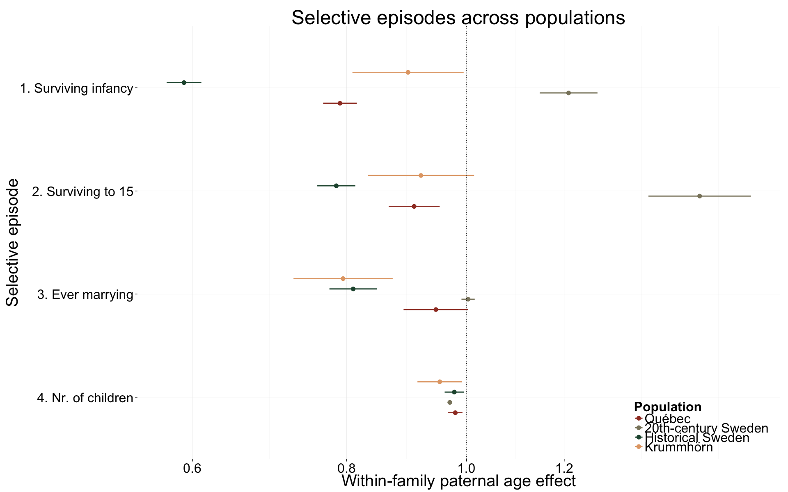
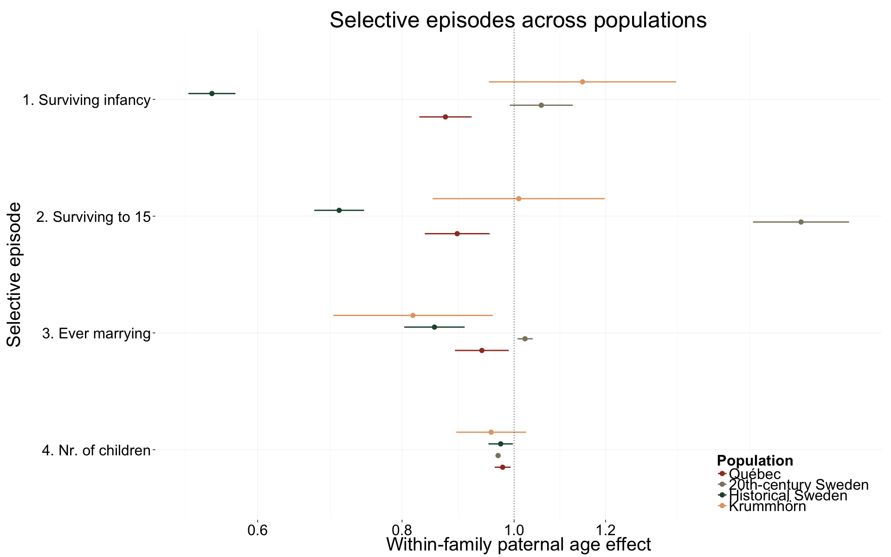
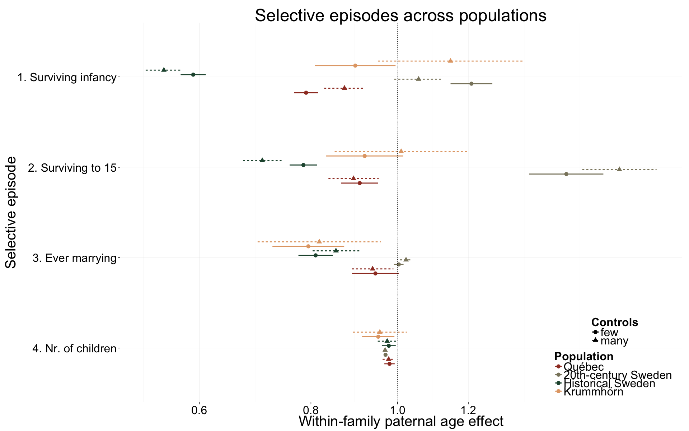
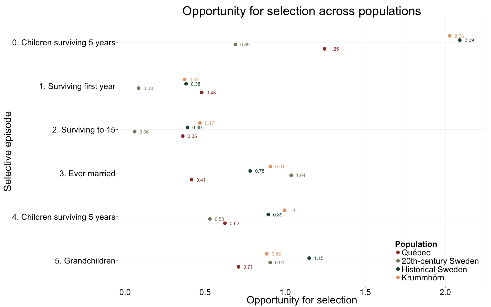

library(grid); library(data.table); library(ggplot2); library(knitr)
opts_chunk$set(warning=TRUE,cache=F,message=F,tidy=FALSE,dev=c('png','pdf'),fig.width=20,fig.height=12.5,out.width='1440px',out.height='900px')
source("0__helpers.R")We control for birth.cohort (birth years in five equally large bins), male sex and region.
We load the coefficients estimated in the sibling comparisons with extensive controls for the Krummhörn, Québec, historical and 20th-century Sweden and compare them.
krmh_coefs = rbindlist(lapply(local({load("coefs/krmh_main_effects_coefs.rdata");environment()}),FUN=data.table))
rpqa_coefs = rbindlist(lapply(local({load("coefs/rpqa_main_effects_coefs.rdata");environment()}),FUN=data.table))
ddb_coefs = rbindlist(lapply(local({load("coefs/ddb_main_effects_coefs.rdata");environment()}),FUN=data.table))
swed_coefs = rbindlist(lapply(local({load("coefs/swed_main_effects_coefs.rdata");rm(Children_all_coefs);environment()}),FUN=data.table))
coefs = merge_coefs(
Krummhörn = (krmh_coefs),
Québec = (rpqa_coefs),
`Historical Sweden` = (ddb_coefs),
`20th-century Sweden` = (swed_coefs)
)
coefs[, Outcome := car::Recode(Outcome, "
'survive1y'='1. Surviving infancy';
'surviveR'='2. Surviving to 15';
'ever_married'='3. Ever marrying';
'children'='4. Nr. of children';
else=NA
")]
coefs[, Outcome := factor(Outcome, levels = rev(sort(unique(coefs$Outcome))))]
coefs$Population = factor(coefs$Population, c("Québec","20th-century Sweden","Historical Sweden","Krummhörn"))
selective_episodes_comp = ggplot(coefs[Coefficient == "paternalage.diff" & !is.na(Outcome),],
aes(colour = Population, x = Outcome, y = Estimate, ymin = Lower, ymax = Upper, group = Population)) +
coord_flip() +
scale_x_discrete("Selective episode") +
scale_y_log10("Within-family paternal age effect", breaks = c(0.4,0.6,0.8,1,1.2))+
geom_pointrange(position = position_dodge(width = 0.4), size = 1) +
pop_colour +
geom_hline(y = 1, colour = "black", linetype = "dotted") +
analysis_theme +
theme(legend.position = c(1,0),
legend.justification = c(1,0),
legend.key.height = unit(1.7,"line")) +
ggtitle("Selective episodes across populations")
selective_episodes_comp
We control for birth.cohort (birth years in five equally large bins), male sex and region.
Additionally, we control for paternal and maternal loss (whether either parent died within 5 years of the birth), for maternal age (bins of 14-20, 20-35 and 35-50), and the total number of siblings (constant for all siblings).
We load the coefficients estimated in the sibling comparisons with extensive controls for the Krummhörn, Québec, historical and 20th-century Sweden and compare them.
krmh_coefs_ctrl = rbindlist(lapply(local({load("coefs/krmh_main_controls_coefs.rdata");environment()}),FUN=data.table))
rpqa_coefs_ctrl = rbindlist(lapply(local({load("coefs/rpqa_main_controls_coefs.rdata");environment()}),FUN=data.table))
ddb_coefs_ctrl = rbindlist(lapply(local({load("coefs/ddb_main_controls_coefs.rdata");environment()}),FUN=data.table))
swed_coefs_ctrl = rbindlist(lapply(local({load("coefs/swed_main_controls_coefs.rdata");rm(Children_all_coefs);environment()}),FUN=data.table))
coefs_ctrl = merge_coefs(
Krummhörn = krmh_coefs_ctrl,
Québec = rpqa_coefs_ctrl,
`Historical Sweden` = ddb_coefs_ctrl,
`20th-century Sweden` = swed_coefs_ctrl
)
coefs_ctrl[, Outcome := car::Recode(Outcome, "
'survive1y'='1. Surviving infancy';
'surviveR'='2. Surviving to 15';
'ever_married'='3. Ever marrying';
'children'='4. Nr. of children';
else=NA
")]
coefs_ctrl[, Outcome := factor(Outcome, levels = rev(sort(unique(coefs_ctrl$Outcome))))]
coefs_ctrl$Population = factor(coefs_ctrl$Population, c("Québec","20th-century Sweden","Historical Sweden","Krummhörn"))
selective_episodes_comp_ctrl = ggplot(coefs_ctrl[Coefficient == "paternalage.diff" & !is.na(Outcome),],
aes(colour = Population, x = Outcome, y = Estimate, ymin = Lower, ymax = Upper, group = Population)) +
coord_flip() +
scale_x_discrete("Selective episode") +
scale_y_log10("Within-family paternal age effect", breaks = c(0.4,0.6,0.8,1,1.2))+
geom_pointrange(position = position_dodge(width = 0.4), size = 1) +
pop_colour +
geom_hline(y = 1, colour = "black", linetype = "dotted") +
analysis_theme +
theme(legend.position = c(1,0),
legend.justification = c(1,0),
legend.key.height = unit(1.7,"line")) +
ggtitle("Selective episodes across populations")
selective_episodes_comp_ctrl
coefs$Controls = "few"
coefs_ctrl$Controls = "many"
coefs_all = rbind(coefs,coefs_ctrl)
selective_episodes_comp_uctrl_ctrl = ggplot(coefs_all[Coefficient == "paternalage.diff" & !is.na(Outcome),],
aes(colour = Population, x = Outcome, y = Estimate, shape = Controls, linetype = Controls, ymin = Lower, ymax = Upper, group = interaction(Controls,Population))) +
coord_flip() +
scale_x_discrete("Selective episode") +
scale_y_log10("Within-family paternal age effect", breaks = c(0.4,0.6,0.8,1,1.2))+
geom_pointrange(position = position_dodge(width = 0.4), size = 1) +
pop_fill +
pop_colour +
geom_hline(y = 1, colour = "black", linetype = "dotted") +
analysis_theme +
theme(legend.position = c(1,0),
legend.justification = c(1,0)) +
ggtitle("Selective episodes across populations")
selective_episodes_comp_uctrl_ctrl 
krmh_coefs_op = rbindlist(lapply(local({load("coefs/krmh_episodes.rdata");environment()}),FUN=data.table))
rpqa_coefs_op = rbindlist(lapply(local({load("coefs/rpqa_episodes.rdata"); environment()}),FUN=data.table))
ddb_coefs_op = rbindlist(lapply(local({load("coefs/ddb_episodes.rdata");episodes$region=NULL; environment()}),FUN=data.table))
swed_coefs_op = rbindlist(lapply(local({load("coefs/swed_episodes.rdata");environment()}),FUN=data.table))
coefs_op = merge_coefs(
Krummhörn = krmh_coefs_op,
Québec = rpqa_coefs_op,
`Historical Sweden` = ddb_coefs_op,
`20th-century Sweden` = swed_coefs_op
)
coefs_op2 = coefs_op %>% setDF() %>%
melt(id=c("Population","byear","birth.decade")) %>%
group_by(Population,variable) %>%
summarise(value = mean(value,na.rm=T)) %>%
data.frame() %>%
mutate( variable = car::Recode(variable, "
'Surviving first year'='1. Surviving infancy';
'Surviving to 15'='2. Surviving to 15';
'Ever married'='3. Ever marrying';
'4. Children'='4. Children surviving 5 years';
'4. Children surviving 5 years'='4. Children surviving 5 years';
'0. Children '='0. Children surviving 5 years';
'Population size'=NA;
'0. Any children'=NA;
'0. Any surviving children'=NA
"),
Population = factor(Population, c("Québec","20th-century Sweden","Historical Sweden","Krummhörn"))
)
coefs_op2$variable = factor(coefs_op2$variable, levels = rev(sort(unique(coefs_op2$variable))))
selective_episodes_opportunity = ggplot(coefs_op2[!is.na(coefs_op2$variable),],
aes(colour = Population, x = variable, y = value, group = Population)) +
coord_flip() +
scale_x_discrete("Selective episode") +
scale_y_continuous("Opportunity for selection")+
geom_text(aes(label = round(value,2),y = value + 0.06), position = position_dodge(width = 0.4), size = 5, show_guide = F) +
geom_point(size=5,position = position_dodge(width = 0.4)) +
pop_fill +
pop_colour +
analysis_theme +
theme(legend.position = c(1,0),
legend.justification = c(1,0),
legend.key.height = unit(1.7,"line")) +
ggtitle("Opportunity for selection across populations")
selective_episodes_opportunity
sessionInfo()## R version 3.2.0 (2015-04-16)
## Platform: x86_64-apple-darwin13.4.0 (64-bit)
## Running under: OS X 10.10.5 (Yosemite)
##
## locale:
## [1] en_US.UTF-8/en_US.UTF-8/en_US.UTF-8/C/en_US.UTF-8/en_US.UTF-8
##
## attached base packages:
## [1] grid graphics grDevices utils datasets stats methods
## [8] base
##
## other attached packages:
## [1] stringi_1.0-1 dplyr_0.4.1 pander_0.5.2 knitr_1.10.5
## [5] rmarkdown_0.7 plyr_1.8.3 ggplot2_1.0.1 formr_0.2.9
## [9] data.table_1.9.6 stringr_1.0.0 devtools_1.8.0
##
## loaded via a namespace (and not attached):
## [1] Rcpp_0.12.1 nloptr_1.0.4 formatR_1.2.1 git2r_0.10.1
## [5] tools_3.2.0 digest_0.6.8 lme4_1.1-7 nlme_3.1-120
## [9] lattice_0.20-31 memoise_0.2.1 evaluate_0.8 gtable_0.1.2
## [13] mgcv_1.8-6 Matrix_1.2-1 DBI_0.3.1 curl_0.9.3
## [17] yaml_2.1.13 parallel_3.2.0 SparseM_1.6 proto_0.3-10
## [21] xml2_0.1.1 rversions_1.0.1 nnet_7.3-9 minqa_1.2.4
## [25] reshape2_1.4.1 car_2.0-25 magrittr_1.5 scales_0.3.0
## [29] htmltools_0.2.6 MASS_7.3-40 splines_3.2.0 assertthat_0.1
## [33] pbkrtest_0.4-2 colorspace_1.2-6 labeling_0.3 quantreg_5.11
## [37] lazyeval_0.1.10 munsell_0.4.2 chron_2.3-47date()## [1] "Tue Dec 8 16:50:04 2015"